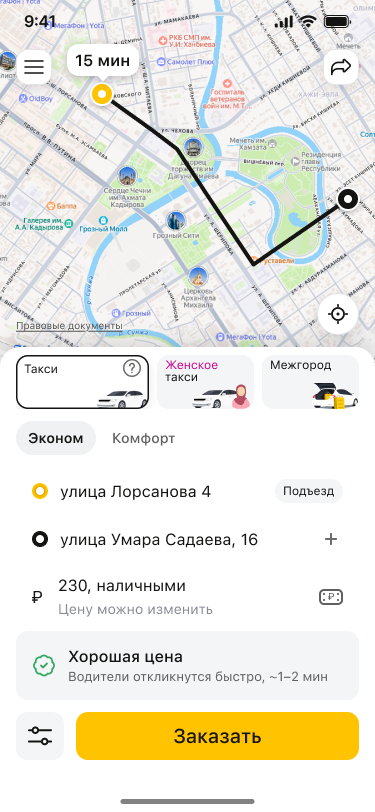

Живой прототип · реальные состояния Figma
Цена влияет на отклик водителей
Выберите состояние и посмотрите, как приложение объясняет связь между предложенной ценой и поиском машины.
Состояния заказа
Переключаются реальные состояния из макета. Заказ и поиск водителя не подключены.